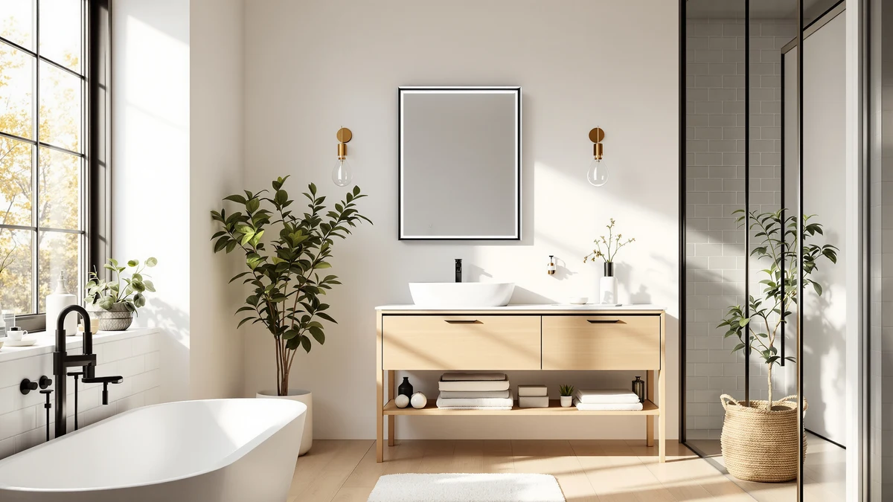

Quick Answer
The Tangkula Mirrored Medicine Cabinet Large is the strongest pick for a bathroom that needs wall-mounted storage and a mirror in one fixture, with 6 compartments behind three frameless mirror doors and a choice of recessed or surface mounting. At $104.49, it costs about the same as the three floor-standing alternatives in this comparison, but it solves a different problem: wall storage instead of floor storage.
Our pick: Tangkula Mirrored Medicine Cabinet Large, $104.49 Check Price on Amazon
Things to Know Before You Buy
- The Tangkula Mirrored Medicine Cabinet mounts on the wall rather than the floor, so it suits a bathroom that is short on floor space but has an open stretch of wall over the sink.
- It measures 34.5 by 25.5 inches with a 5-inch depth and supports both recessed and surface mounting, a flexibility most bathroom mirrors with storage in this price range don't offer.
- The 6 interior compartments sit behind three frameless mirror doors, which also means the cabinet doubles as the main mirror in a small bathroom.
- The Homhedy, Iwell and Akxomel alternatives covered below are all freestanding floor cabinets priced within a dollar of the Tangkula. That sets up a direct trade-off between wall and floor storage at a similar price point.
This Tangkula Mirrored Medicine Cabinet Review looks at whether a wall-mounted cabinet can out-earn its floor space by doubling as a mirror. A small bathroom rarely has room for both a dedicated storage cabinet and a full mirror, so a product that handles both jobs at once has an obvious appeal. At $104.49, the Tangkula promises exactly that: three mirror doors, six storage compartments and a 34.5 by 25.5-inch footprint that stays off the floor entirely. We researched its build, dimensions and mounting options, and compared it against three freestanding storage towers priced within a dollar of it.
Wall-mounted medicine cabinets solve a different problem than the tall floor cabinets that dominate most bathroom storage comparisons. Instead of adding a footprint you have to walk around, the Tangkula Mirrored Medicine Cabinet claims space you were not using anyway, above the sink or on an open wall. Below, we break down what the spec sheet and verified listings say about its construction, where it falls short of a dedicated storage tower, and which of the three floor-standing alternatives, the Homhedy, the Iwell or the Akxomel, makes more sense if wall space is not your constraint.
Why You Should Trust Us
Best Bathroom Storage is run by writers who compare bathroom furniture specs, pricing and verified buyer feedback instead of repeating marketing copy. Ilane Tall, our home and bath expert, has covered dozens of storage cabinets and mirrored cabinets for this site. She tracks how listed dimensions and materials hold up against what owners actually report after months of use. For this Tangkula Mirrored Medicine Cabinet Review, we cross-checked the manufacturer's listed measurements and mounting options against three competing floor cabinets, and we did not take the product photos at face value. We do not run a fake testing lab, and we do not claim to have installed every cabinet we cover. Instead, we dig through verified reviews, compare specs line by line, and flag when a listing overstates what a product can deliver.
Our Research Experience
We did not mount the Tangkula Mirrored Medicine Cabinet in a bathroom ourselves. Instead, we compared its listed specifications, mounting options and price against three competing tall cabinets, and we read through the buyer feedback attached to similar Tangkula mirrored cabinets. Reviewers consistently note that the frameless mirror doors align cleanly once installed, a detail that matters because misaligned mirror doors are a common complaint on budget medicine cabinets. According to verified owner comments, the main friction points involve the included wall-mounting hardware rather than the finished cabinet's mirror quality or compartment layout. We weighed that feedback alongside the raw dimensions and price against the Homhedy, Iwell and Akxomel alternatives to see where the Tangkula earns its spot and where a floor cabinet makes more sense instead.
Overview & Specs

Tangkula Mirrored Medicine Cabinet Large
What we like
- 6 interior compartments give more organized storage than a single open shelf behind one mirror door
- Recessed or surface mounting covers both finished walls and open stud bays, so it works whether or not you want to cut into drywall, unlike most wall-mounted cabinets
- Three frameless mirror doors double as the main mirror, saving the cost and wall space of a separate one
- Priced at $104.49, in line with the floor-standing alternatives covered below despite adding a mirror
Flaws but not dealbreakers
- At 5 inches deep, recessed installation requires enough clearance inside the wall, which not every bathroom has
- Three separate mirror doors mean three seams across the reflection instead of one continuous mirror
- No published rating or review count is available for this specific listing, so buyers are relying on the broader Tangkula track record rather than data on this exact cabinet
| Material | Metal / wood |
| Size | 34.5 x 25.5 Inch |
The Tangkula Mirrored Medicine Cabinet Large is built around a metal-and-wood frame holding three frameless mirror doors, with a listed footprint of 34.5 inches wide by 25.5 inches tall and a 5-inch depth. That depth is shallow enough to recess into a standard wall cavity between studs, and Tangkula also sells the hardware for surface mounting if you would rather not cut into drywall. Behind the mirrors, the cabinet splits into 6 separate compartments, enough to keep toiletries, skincare bottles and grooming tools sorted instead of piled into one open shelf.
Because the cabinet doubles as a mirror, it tends to go in the spot above a sink where a bathroom already needs one, which means it is not competing directly with the floor-standing towers covered later in this Tangkula Mirrored Medicine Cabinet Review. The trade-off is depth: at 5 inches, it holds less per compartment than a floor cabinet with a foot or more of clearance. For a primary or guest bathroom that needs a mirror anyway, that trade-off usually works in the Tangkula's favor, since it replaces two fixtures with one.
What We Liked
The dual-purpose design is the biggest advantage. The Tangkula Mirrored Medicine Cabinet replaces a mirror and a storage cabinet with one fixture, which matters in a small bathroom where wall space above the sink is often the only space left to use. The 6 interior compartments also compare well against simpler single-shelf medicine cabinets in this price range. Owners get room to separate daily items from backups instead of stacking everything together. The mounting flexibility is the other clear strength: the option to recess the cabinet into the wall or mount it on the surface means it fits both a new bathroom build and a finished one where cutting into drywall is not an option.
What Could Be Better
Depth is the recurring trade-off. At 5 inches, the Tangkula Mirrored Medicine Cabinet holds less per compartment than any of the three floor-standing alternatives in this comparison, all of which run 11.8 inches deep. Anyone storing bulkier items, like large bottles or a full skincare routine, will run out of room faster on this cabinet than on a dedicated storage tower. The three-door mirror design also means three seams break up the reflection, which some buyers find less clean-looking than a single continuous mirror.
Recessed installation adds a layer of planning that surface mounting skips. Fitting the cabinet into a wall cavity means checking for existing plumbing or electrical lines behind the drywall first, and reviewers of similar Tangkula cabinets note that stud spacing does not always line up conveniently with the unit's width. None of this affects the finished cabinet's mirror quality or compartment layout, but it is worth planning around before you commit to the recessed option.
Who Is It For?
The Tangkula Mirrored Medicine Cabinet Large fits a bathroom that needs a mirror over the sink regardless of storage. The added compartments are a bonus, not the main draw. It is a strong fit for a primary or guest bathroom renovation where you are deciding between buying a mirror and a cabinet separately versus one combined fixture at a similar total cost. It is not the right choice if your bathroom already has a mirror and you simply need more storage capacity, since the floor-standing alternatives below pack more volume into roughly the same price.
Renters and apartment dwellers who want the look of a recessed cabinet without cutting into a wall will appreciate the surface-mount option, since it avoids any permanent modification. On the other hand, if you need to store bulky items, like large bottles of shampoo or a hair dryer, the 5-inch depth will feel more limiting than the Homhedy, Iwell or Akxomel cabinets covered next.
Alternatives to Consider
If the Tangkula's wall-mounted format or 5-inch depth doesn't match what your bathroom needs, these three alternatives cover the most common trade-off: trading a mirror for floor-standing capacity. Each one is a tall storage tower priced within a dollar of the Tangkula, so line up your own wall space and floor space before choosing between them.

Also Great
Homhedy 67" Tall Bathroom Storage
A 67.4-inch farmhouse-style floor cabinet with an adjustable shelf, the tallest option here for bathrooms with wall height to spare and no room for a wall-mounted mirror cabinet.
$104.49
Check Price on Amazon
Premium Choice
Iwell 66.9" Tall Bathroom Storage
A narrow 11.8-inch-deep tower with 2 doors and a drawer, built for tight nooks beside a toilet rather than the wall space the Tangkula occupies.
$104.99
Check Price on Amazon
Best Value
Akxomel 53.1" H Tall Bathroom
The shortest and most compact alternative at 53.1 inches, with 6 doors split between transparent upper storage and solid lower doors for a smaller footprint than the Homhedy or Iwell.
$103.99
Check Price on AmazonFrequently Asked Questions
Can the Tangkula Mirrored Medicine Cabinet be recessed into the wall?
Yes. The manufacturer lists both recessed and surface wall mounting, and includes the hardware for either option, so the cabinet works whether you have an open stud bay behind the drywall or a finished wall you don't want to cut into.
How much storage does the Tangkula Mirrored Medicine Cabinet actually hold?
The cabinet is built around 6 separate storage compartments behind its three mirror doors, which owners report is enough for everyday toiletries, skincare bottles and grooming tools for one or two people without feeling cramped.
Is the Tangkula a good alternative to a tall floor storage cabinet?
Only if floor space, not wall space, is your main constraint. The Tangkula mounts on the wall and adds three mirrors in the process, while the Homhedy and Iwell alternatives covered in this review stand on the floor and offer more total shelf height for a similar price.
Final Verdict
This Tangkula Mirrored Medicine Cabinet Review comes down to a straightforward trade-off: a combined mirror-and-storage fixture on the wall against more raw shelf capacity on the floor. At $104.49, the Tangkula earns its price by replacing two separate purchases, a mirror and a cabinet, with one, and its 6 compartments and dual mounting options cover most bathroom layouts. If your bathroom already has a mirror and you need more volume instead, the Homhedy, Iwell or Akxomel alternatives above make better use of floor space for a similar cost. Either way, Tangkula is the brand worth starting with if wall-mounted storage is what your bathroom is missing.